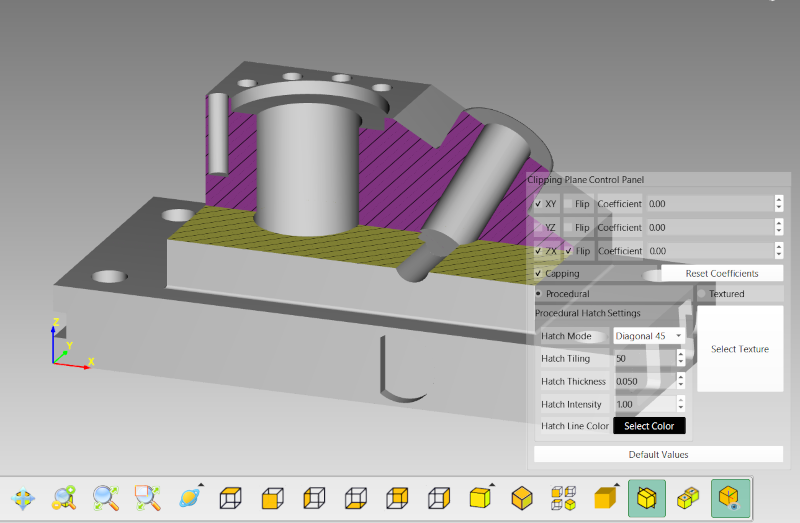
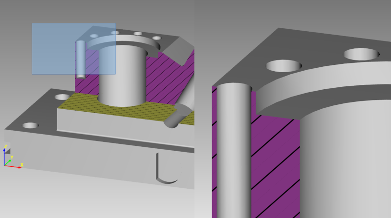
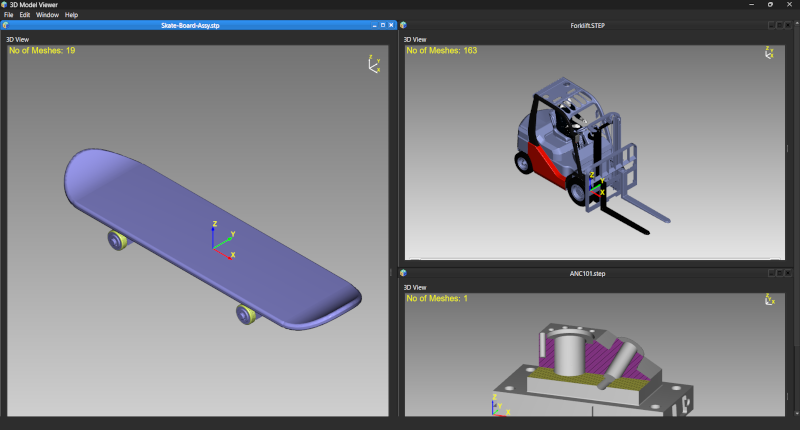
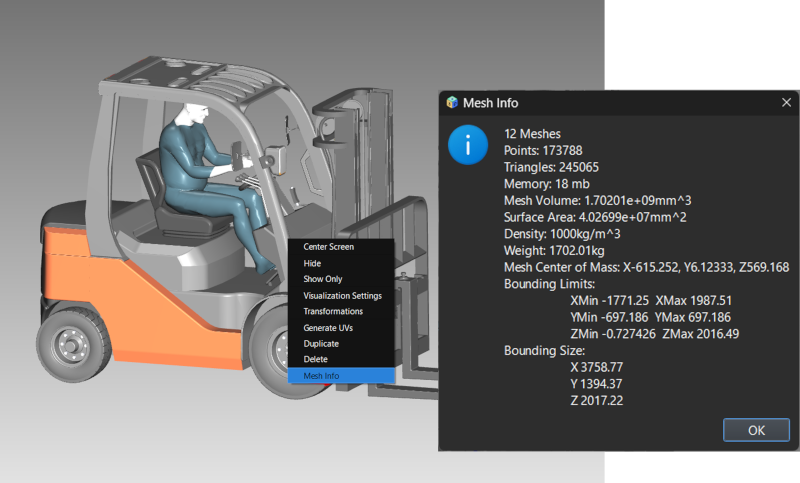

Lesson 12 of 14
Lesson 12: Advanced Features
Introduction
ModelViewer includes several advanced features for specialized visualization and analysis tasks.
Clipping Planes / Section View
Cut through models to see internal structure:
Step 1: Enable Section View
Click the 'Section View' button in the view toolbar.
Step 2: Clipping Plane Editor
A control panel appears with options for XY, YZ, and ZX clipping planes.
Step 3: Activate Planes
Enable individual planes and use sliders to position them through the model.
Step 4: Flip Direction
Use 'Flip' buttons to reverse which side is cut away.

Model cut by clipping plane showing internal structure
Use clipping planes to inspect internal features, analyze cross-sections, or create cutaway views for presentations.
Window Zoom
Zoom precisely into a specific area:
Step 1: Activate Window Zoom
Click 'Window Zoom' button in toolbar or right-click → 'Zoom Area'.
Step 2: Draw Rectangle
Click and drag to draw a rectangle around the area you want to magnify.
Step 3: Zoom Executes
Release the mouse button and the view zooms to fit your selected area.

Rectangle being drawn for window zoom with resultMultiple Sessions
Work with multiple models simultaneously:
Step 1: Open New Session
File → New or Ctrl+N creates a new viewer window.
Step 2: Arrange Windows
Use Window menu to Tile, Cascade, or arrange custom layouts.
Step 3: Independent Views
Each session has its own camera, display settings, and object list.

Multiple viewer windows tiled showing different modelsSaving Scenes
Save your complete scene with all settings:
Step 1: Save Project
File → Save or Ctrl+S saves to ModelViewer's .mvf format.
Step 2: What's Saved
• All models and their geometry
• Materials and textures
• Transformations
• Visibility states
• Camera position
• Display settings
• Materials and textures
• Transformations
• Visibility states
• Camera position
• Display settings
Step 3: Reopen Later
File → Open and select your .mvf file to restore the complete scene.
Exporting
Export models to different formats:
Step 1: Select Objects
Select the objects you want to export (or leave all selected for full export).
Step 2: File → Export
Or press Ctrl+Shift+E.
Step 3: Choose Format
Select target format (OBJ, STL, PLY, etc.) and location.
Export preserves geometry but may not export all material properties depending on the target format's capabilities.
Mesh Information
View detailed statistics about objects:
Step 1: Select Object
Select a single object in the list or viewport.
Step 2: Mesh Info
Right-click → 'Mesh Info' to see detailed statistics.
Step 3: Information Shown
• Vertex count
• Triangle/polygon count
• Bounding box dimensions
• Surface area
• Memory usage
• Triangle/polygon count
• Bounding box dimensions
• Surface area
• Memory usage

Mesh information dialog showing statistics